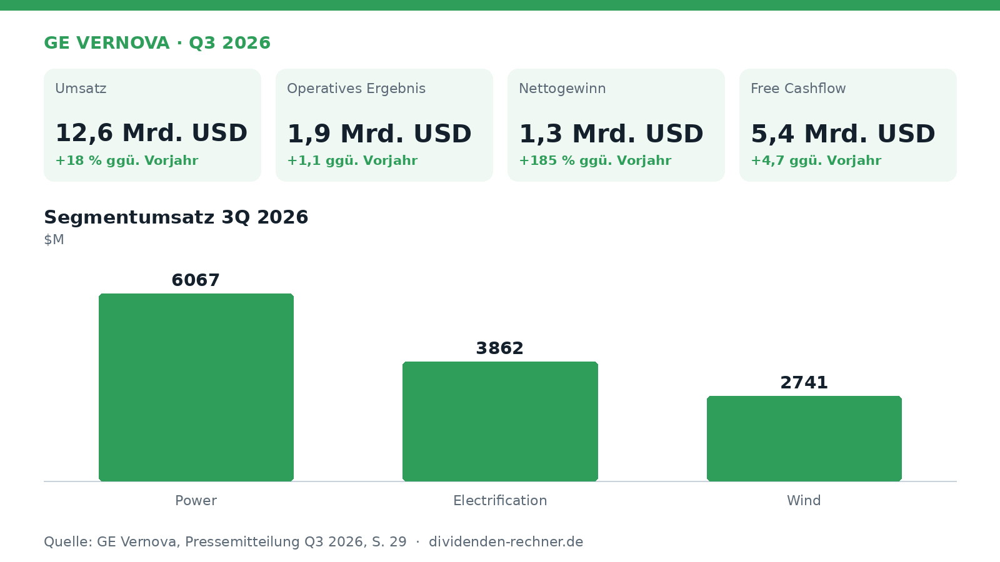
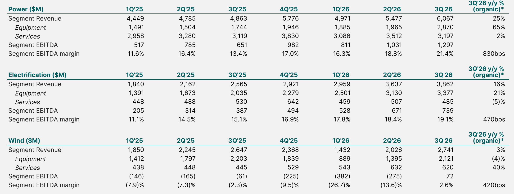
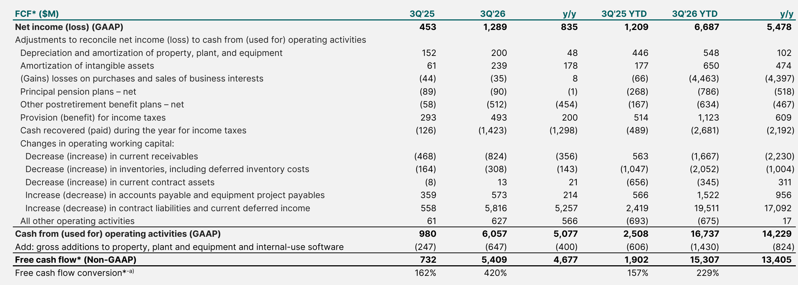

Quartalszahlen
GE Vernova steigert Quartalsumsatz auf 12,6 Milliarden US-Dollar
GE Vernova legt die Zahlen für das dritte Quartal 2026 vor: Umsatz und Nettogewinn steigen deutlich, während der Free Cashflow stark zulegt.
Kurz gesagt
Umsatz: 12,6 Mrd. USD (+18 %) · Gewinn: 1,3 Mrd. USD (+185 %)
- Starkes Wachstum: Umsatz und Nettogewinn legen im dritten Quartal kräftig zu.
- Der Grund: Vor allem die Segmente Power und Electrification treiben das Geschäft.
- Großer Auftragsbestand: Der Backlog wächst weiter an und nähert sich der Marke von 200 Milliarden US-Dollar.

Eigene Darstellung nach Daten aus: GE Vernova, Quartalszahlen Q3 2026 vom 2026-10-28.Energietechnik und Netzlösungen treiben GE Vernova
GE Vernova hat im dritten Quartal 2026 die Geschäftszahlen vorgelegt und ein deutliches Wachstum bei Umsatz und Gewinn verzeichnet. Der Konzern profitiert von einer hohen Nachfrage nach Energietechnik und netzbezogenen Lösungen.
Das Quartal im Detail
Im dritten Quartal kletterte der Umsatz auf 12,6 Mrd. USD, was einem Zuwachs von 18 Prozent im Vergleich zum Vorjahreszeitraum entspricht. Getrieben wurde diese Entwicklung vor allem von den Bereichen Power und Electrification. Der Nettogewinn nach GAAP sprang um 185 Prozent auf 1,3 Mrd. USD nach oben. Das bereinigte EBITDA erreichte 1,9 Mrd. USD, während die entsprechende Marge deutlich auf 15,4 Prozent kletterte.
Ein Blick auf die Segmente zeigt ein gemischtes Bild: Power wuchs stark, während das Wind-Geschäft weiterhin mit Herausforderungen kämpft, auch wenn hier ein kleiner Gewinn verbucht werden konnte.

Finanzkennzahlen nach Segmenten. Quelle: GE Vernova, Quartalszahlen Q3 2026 vom 2026-10-28, S. 29. Ausschnitt nur zugeschnitten, sonst unverändert.Schulden und Cashflow
Die Cashflow-Entwicklung fiel im abgelaufenen Quartal äußerst positiv aus. Der Free Cashflow sprang auf 5,4 Mrd. USD, verglichen mit 0,7 Milliarden US-Dollar im Vorjahreszeitraum. Zu diesem Anstieg trugen vor allem positive Effekte aus dem Working Capital und ein höherer operativer Gewinn bei. Das Unternehmen baut damit seine finanzielle Flexibilität weiter aus.

Free Cashflow Entwicklung. Quelle: GE Vernova, Quartalszahlen Q3 2026 vom 2026-10-28, S. 33. Ausschnitt nur zugeschnitten, sonst unverändert.Ausblick und offene Punkte
Gestützt auf die positive Geschäftsentwicklung hat das Management die Jahresprognose für 2026 angehoben. Das Unternehmen rechnet nun mit einem Gesamtumsatz zwischen 46,5 und 47,5 Milliarden US-Dollar sowie einem Free Cashflow von 16 bis 17 Milliarden US-Dollar. Kritisch zu beobachten bleibt indes die Entwicklung im Wind-Segment, das trotz operativer Verbesserungen weiterhin rote Zahlen im Neunmonatsvergleich schreibt.
Die wichtigsten Zahlen im Überblick
| Kennzahl | Wert | Veränderung zum Vorjahr | Quelle |
|---|---|---|---|
| Umsatz | 12,6 Mrd. USD | +18 % | S. 14 |
| Operatives Ergebnis | 1,9 Mrd. USD | +1,1 | S. 14 |
| Nettogewinn | 1,3 Mrd. USD | +185 % | S. 41 |
| Free Cashflow | 5,4 Mrd. USD | +4,7 | S. 14 |
Quelle: GE Vernova, Quartalszahlen Q3 2026 vom 2026-10-28. Rechenwege eigene Berechnung. Keine Anlageberatung.
Hinweis: Dieser Text dient der allgemeinen Information und ist weder Anlage-, Steuer- noch Rechtsberatung. Kapitalanlagen sind mit Risiken verbunden, bis hin zum Totalverlust.